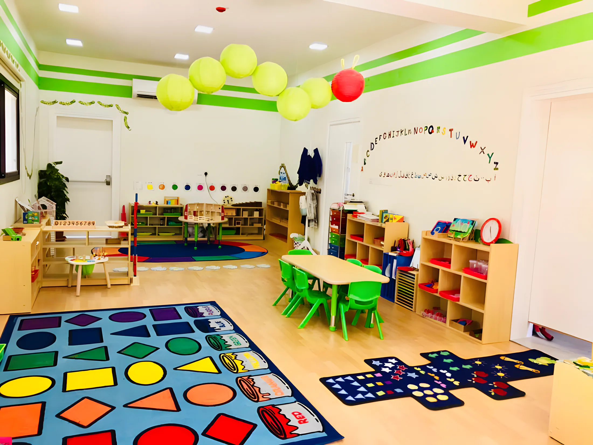

الرئيسية / البرامج
الفترات،الفصولوالمنهج

ثلاث فترات، وعشرة فصول، ومنهج واحد، للأطفال من 9 أشهر إلى 4 سنوات. هنا كل شي عن التسجيل في الروضة، من أول اتصال إلى أول صباح.
اختاروا عمر طفلكم
الفترات
- الفترة الصباحية · 8:00 – 12:00 أو 12:30
إلى 12:00 للرضّع وما قبل الحضانة، وإلى 12:30 للحضانة. المنهج كامل كل صباح.
- الفترة المسائية · 13:00 – 17:00
نفس منهج وأنشطة الفترة الصباحية، للعائلات اللي تحتاج وقتًا غير الدوام الصباحي المعتاد.
- الصباحية + الرعاية النهارية · 8:00 – 15:00
الفترة الصباحية، ثم وجبات وسناكات إضافية، ووقت لعب، ووقت أطول لطفلكم يكوّن صداقات ويبدع.
يتوفر أيضًا التوصيل المبكر. اتصلوا على 3644 7000 للاستفسار
عشرة فصول حسب العمر
نقبل الأطفال من 9 أشهر إلى 4 سنوات. كل فصل صغير، تقوده معلمة مؤهلة مع معلمات متخصصات ومساعدات، عشان كل طفل يحصل على اهتمام خاص فيه.
12–18 شهر
- Ladybirds
18–24 شهر
- Caterpillars
- Penguins
- Ducklings
2–3 سنوات
- Butterflies
- Clever Cats
- Bluebirds
- Dinosaurs
3–4 سنوات
- Giraffes
- Busy Bees

المنهج
المرحلة التأسيسية البريطانية (EYFS) وطريقة منتسوري جنبًا إلى جنب. منهج يهتم بنمو الطفل كاملًا: عاطفيًا وجسديًا وذهنيًا واجتماعيًا. بالعربي والإنجليزي.
التواصل واللغة
بيئة غنية باللغة. مواد منتسوري اللغوية تساعد الأطفال يتكلمون ويستمعون بثقة في مواقف مختلفة، وتجهّزهم للكتابة. وممكن تكون بلغتين.
المواد الحسية
أول تعلّم للطفل يكون باللمس والتذوق والشم والسمع. المواد الحسية تقوّي الملاحظة وتزيد المفردات.
الرياضيات
الفرز والمطابقة والعد أولًا، ثم تقود مواد منتسوري خطوة بخطوة إلى الأرقام والجمع والطرح البسيط والأشكال والمقاييس.
القراءة والكتابة
ربط الأصوات بالحروف، وبداية القراءة والكتابة، بمواد متنوعة.
فهم العالم
مواضيع من تجارب الحياة الواقعية، ورحلات تعليمية كثيرة لاكتشاف العالم والمجتمع.
النمو الجسدي
رقص ومسرح، وحصص رياضة أسبوعية، ومتخصصون يقودون أنشطة الموسيقى والمسرح خلال السنة.
الفنون والتصميم
رسم وموسيقى وحركة ورقص ورياضة ولعب أدوار وتصميم، بخامات ومواد متنوعة.
الحياة اليومية
الرابط بين البيت والروضة: الاهتمام بالفصل، والمشاركة في حياته الاجتماعية، وبناء التناسق والتوازن.
طريقة التسجيل
- اتصلوا بنا أو زوروا الروضة
على 3644 7000 أو 3655 4000، أو راسلونا على info@littlewondersbh.com.
- عبّوا نموذج إبداء الاهتمام
التسجيل مفتوح طوال السنة، فتقدرون تقدّمون في أي وقت.
- نتواصل معكم
نتصل فيكم ونشرح خطوات القبول والتسجيل.
جيبوا معكم عند التسجيل
- نسخة من شهادة ميلاد الطفل
- نسخة من صفحة صورة جواز الطفل وإقامته
- نسخة من سجل تطعيمات الطفل بالإنجليزي
- صورة شخصية بحجم الجواز
- نموذج التسجيل والنموذج الطبي بعد تعبئتهما
- نسخة من جواز وإقامة ولي الأمر الكفيل (الأم أو الأب)
نموذج التسجيل والنموذج الطبي ومواعيد الفصول الدراسية متوفرة للتحميل هنا أو من الروضة مباشرة.